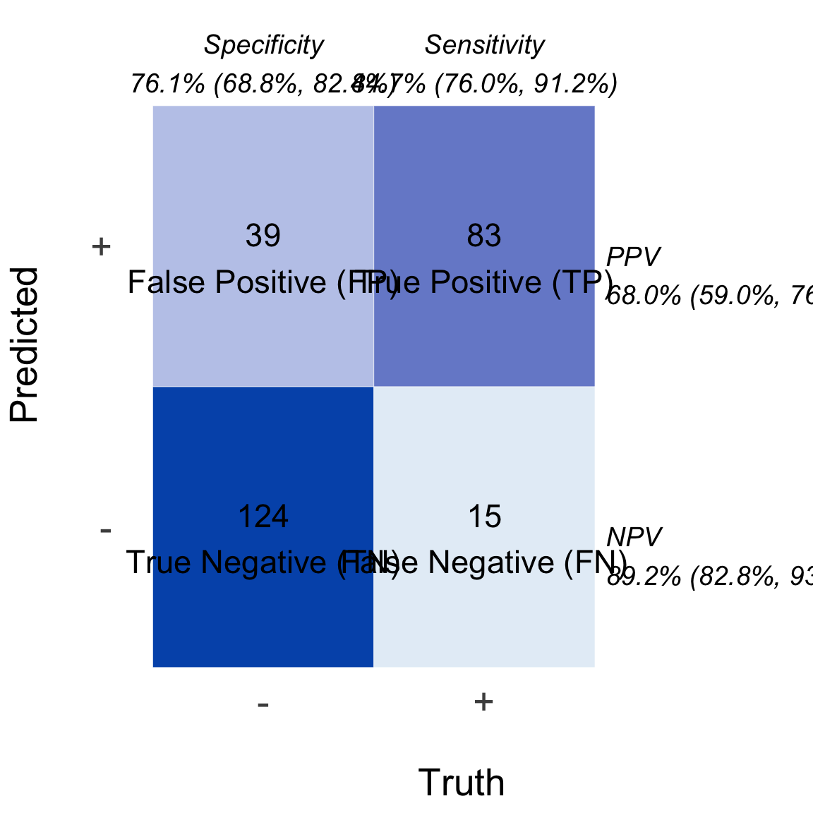

Plot ROC curve for a dx object
dx_cm(dx_obj, palette = c("#e5eef7", "#0057B8"), levels = c("-", "+"))
Arguments
- dx_obj
An object of class dx
- palette
A character vector of length 2. Colors for low and high ends of the fill gradient
- levels
A character vector of length 2. x an y labels for +/- classes
Examples
dx_obj <- dx(
data = dx_heart_failure,
true_varname = "truth",
pred_varname = "predicted",
outcome_label = "Heart Attack",
threshold_range = c(.1, .2, .3),
setthreshold = .3,
grouping_variables = c("AgeGroup", "Sex", "AgeSex")
)
dx_cm(dx_obj)
